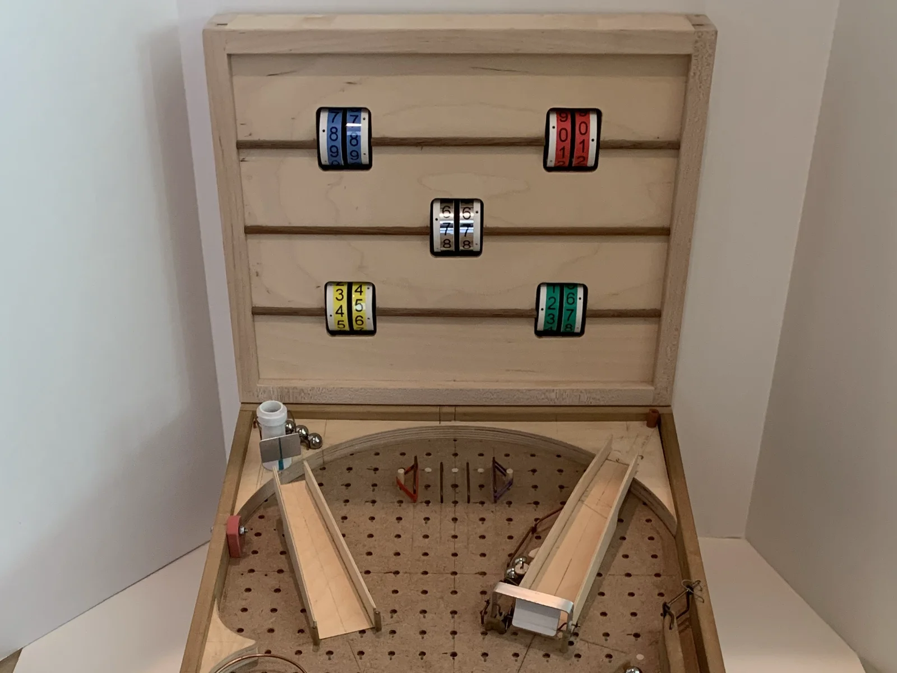
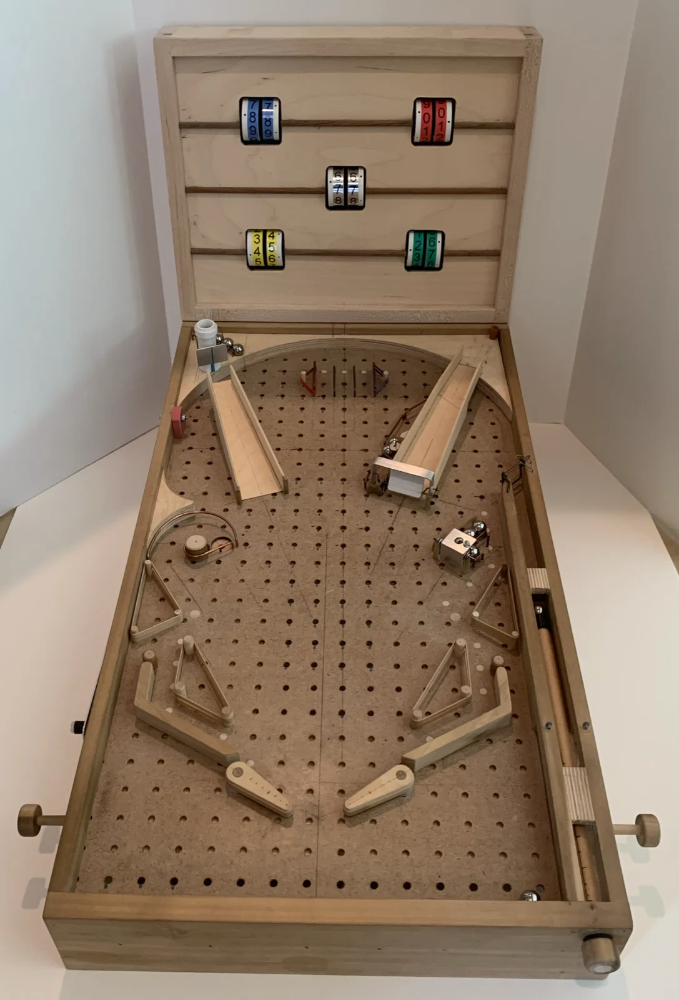
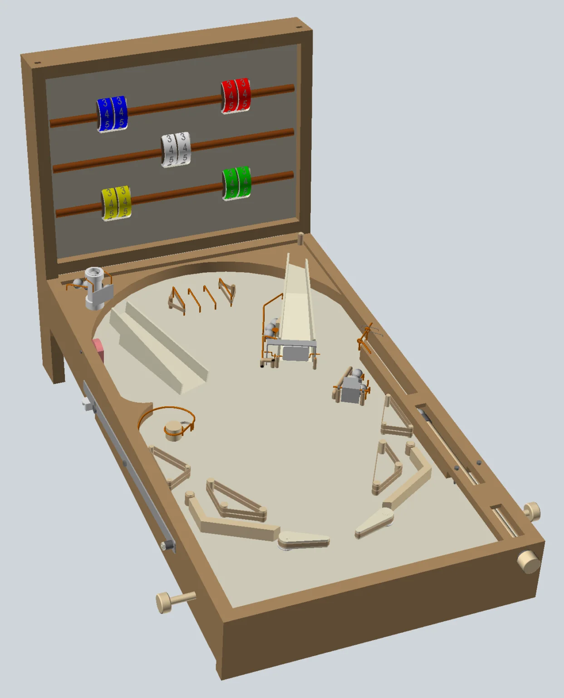
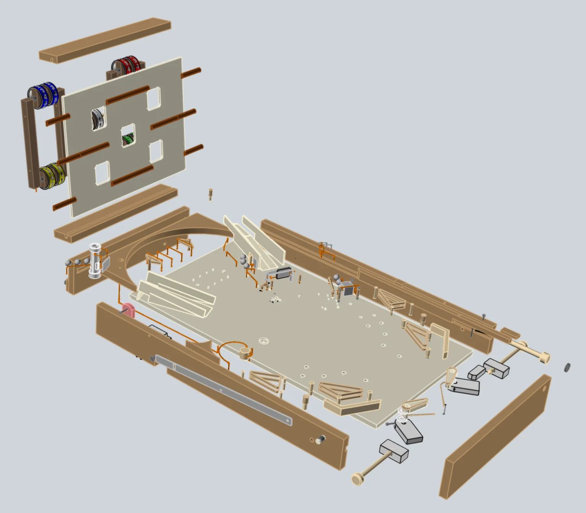
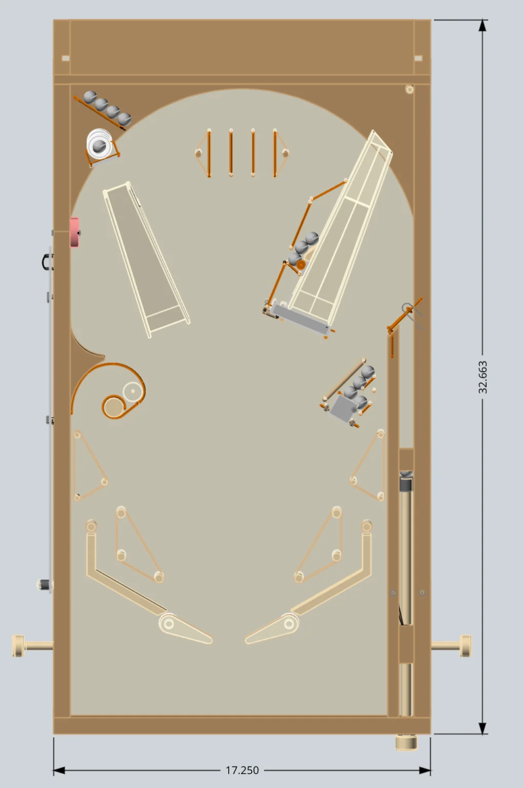
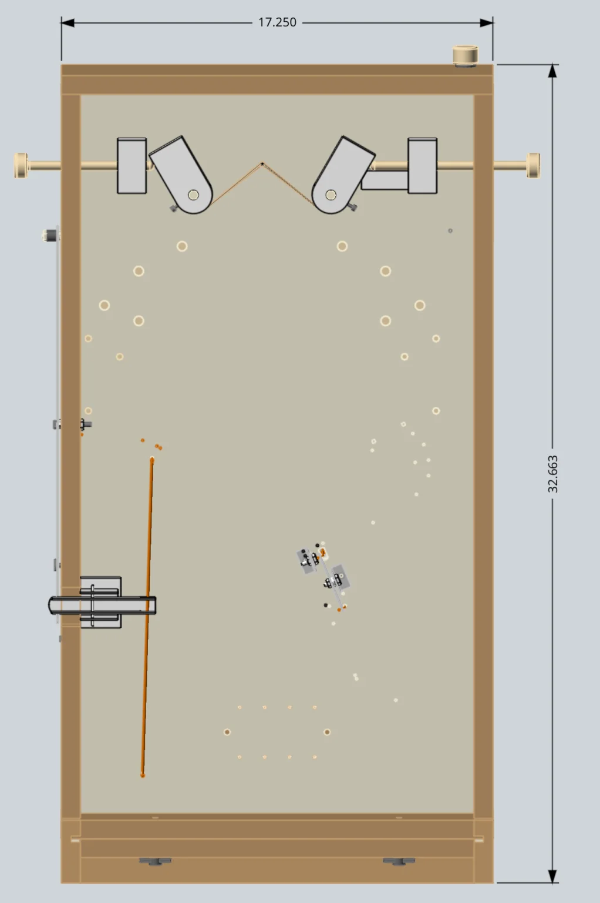
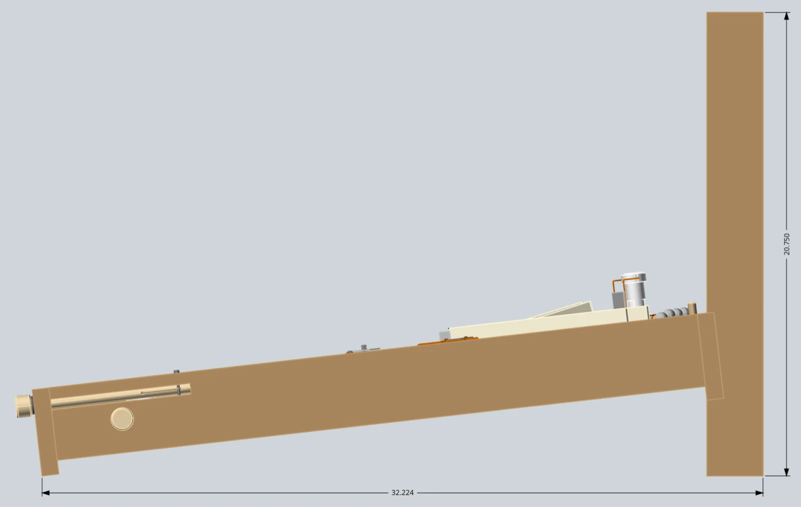
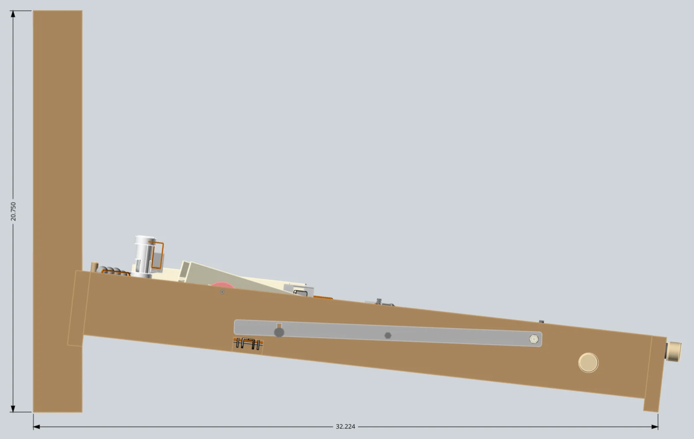

Mechanical Pinball Machine
Includes the STEP CAD file and instructions PDF.
{kind=link}

A fully mechanical wooden pinball machine — functional shooter, flippers, marble-dispensing targets, and scoreboard. Free 3D CAD files available.
Make a mechanical pinball machine complete with a fully functional shooter, flippers, marble-dispensing targets, and scoreboard! The pinball machine is scaled to simulate an actual pinball game using common 5/8″ balls versus the 1 1/16″ diameter balls used for a full sized pinball machine.
This project started as a trial-and-error prototype that I played with my grandchildren. Initially I used pegboard material for the playing field plus removable 1/4″ diameter wooden dowels to facilitate easy changes to the field layout and corresponding game action.
As you can see from the photographs, the project evolved into a permanent field layout but still has the original pegboard surface (with lots of plugged holes). If I was building another one, I’d definitely replace the pegboard with a solid piece of plywood.
Setup and Scoring
I wanted the pinball machine to be portable and easily stored, so I made the back scoreboard removable using two thumbscrews. To assemble, simply set the back edge of the playing field onto the scoreboard assembly and tighten the two thumbscrews. Insert the flipper push rods, add balls, zero the scoreboard and you’re ready to play.
My grandchildren are competitive and enjoy winning. So I decided we needed a way to keep score. My solution was bonus balls dispensed by hitting the various targets on the playing field. My grandchildren also like to place a ball in each of the ‘rollover’ lanes near the top. Players can determine in advance the number of ‘shooter’ balls per game each player is allowed.
Supplies
Materials & Hardware
- 3/4″ baltic birch plywood (playing field top and left side arcs)
- 1/2″ poplar (shooter lane sides, flipper lane guides)
- 0.095″ diameter wire (rails, pocket ball ejector rod, post bumpers)
- 0.06″ diameter welder’s rod (spinner push-pull rod)
- Wooden dowels — 1/4″, 3/8″, and 1/2″ diameter (posts and shooter rod)
- Thick rubber band bumpers — 1/4″ wide x 3 1/2″ long (flipper sleeves, bumpers)
- Thin rubber bands — 1/16″ wide x 3 1/2″ long (flipper returns, shooter)
- 1/4″ and 1/2″ diameter latex tube (post sleeves)
- Metal brackets — 1/16″ thick aluminum
- Scoreboard dials — 1 1/4″ diameter PVC pipe (schedule 40)
- 3/8″ thick closed-cell foam (scoreboard PVC spacers)
- Rubber bumper (left side) — pencil eraser
- 6-32 machine screws, nuts, washers
- Wood screws, misc. sizes
- 1/4-20 T-nuts (attach scoreboard assembly to playing field)
- Cotter pins (shooter rubber band pins)
Tools
- Wire bending tool (for rails and welder’s-rod pieces)
- Basic shop tools (saw, drill, sander)
Pulled from the build notes below — quantities weren’t specified in the original write-up.
How It Works
The playing field has four targets containing bonus balls.
1. Pocket hole target
Located at middle left side. Score by capturing the shooter ball in the pocket. Then manually flip the left side lever bar to release a bonus ball from the top left corner and also eject the shooter ball from the pocket.
2. Ramp jump target
Located at the top left corner. Score by flipping a ball up the left ramp hard enough to jump the gap and hit the target. The target face plate pivots back and pushes a ball out of the PVC tube.
3. Spinner target
Located in front of the right ramp. Score by flipping a ball through the spinner in front of the right ramp. A ball located on the left side of the right ramp is ejected when the spinner is rotated.
4. Flip target
Located at the middle right side. Score by flipping a ball hard enough to rotate the target face plate, which ejects a bonus ball.
A turn ends when all of the shooter balls have been used. Count the ‘drained’ balls at the bottom end of the playing field and manually rotate the scoreboard wheels to record the score.
Construction Notes
My example pinball machine was created as a work-in-progress prototype. I created the CAD model using the actual prototype dimensions with some minor ‘cleanup’ alterations — for example, the CAD model uses 3/4″ stock for the sides and ends, and the playing field is 1/2″ plywood, versus the prototype’s collection of pieces that were added and modified as the design evolved.
I selected final dimensions based on full-sized pinball machines and actual testing using both 5/8″ diameter glass marbles and, subsequently, 5/8″ steel marbles. The glass marbles were acceptable, but myself (and more importantly my grandchildren) preferred the heavier steel balls, which provide more realistic game action.
Tip: I like to print out full-size templates using the CAD model. For larger pieces, I tape together multiple sheets, then use a temporary spray adhesive to mount the template to the material. Once mounted, making the cutouts is easy and relatively fast.
I made my prototype to withstand the abuse typical of children 5–9 years of age, and haven’t had any major broken pieces. If my ‘audience’ had been a bit older, I probably would have used thinner materials to reduce both weight and size.
I did a lot of brainstorming, prototyping, and testing to get the mechanical targets to work consistently — spacing had to be accurate. Tip: I had to recess both the wooden mounting plug screw hole and the PVC tube bottom cutout lip to make the vertical PVC target work correctly. The recesses provide just enough ‘lip’ to keep the bottom ball from being ejected by the balls stacked on top.
The flippers and shooter use the same size rubber bands, which eventually stretch and need replacing. The flipper rubber band is replaced by removing the two pins and then the rubber band, then installing a new one by (1) inserting one pin through the rubber band and into the playing field hole, (2) routing the rubber band through the hole in the shooter dowel, and (3) pushing the other pin through the rubber band and into the matching playing field hole.
Final Thoughts
A few possible improvements I’ve considered for a future version:
- Modify the flipper push rod design so the flippers can’t fall out of the cabinet — hasn’t really been a problem so far, but I haven’t identified a quick fix given the multiple layers on the bottom side.
- Re-align the right side target rails to be perpendicular to the 90-degree ‘L’ bracket front edge — I rotated the ‘L’ 15 degrees to be perpendicular to the rubber band rails so the target was easier to hit.
- Add another target at the top right corner, where the ball exits the right ramp.
- Improve the flipper ‘bearings’ to eliminate some of the slop — the flippers function really well, but I suspect I’ll eventually need to re-work the bearings as the wood wears.
Image Gallery






